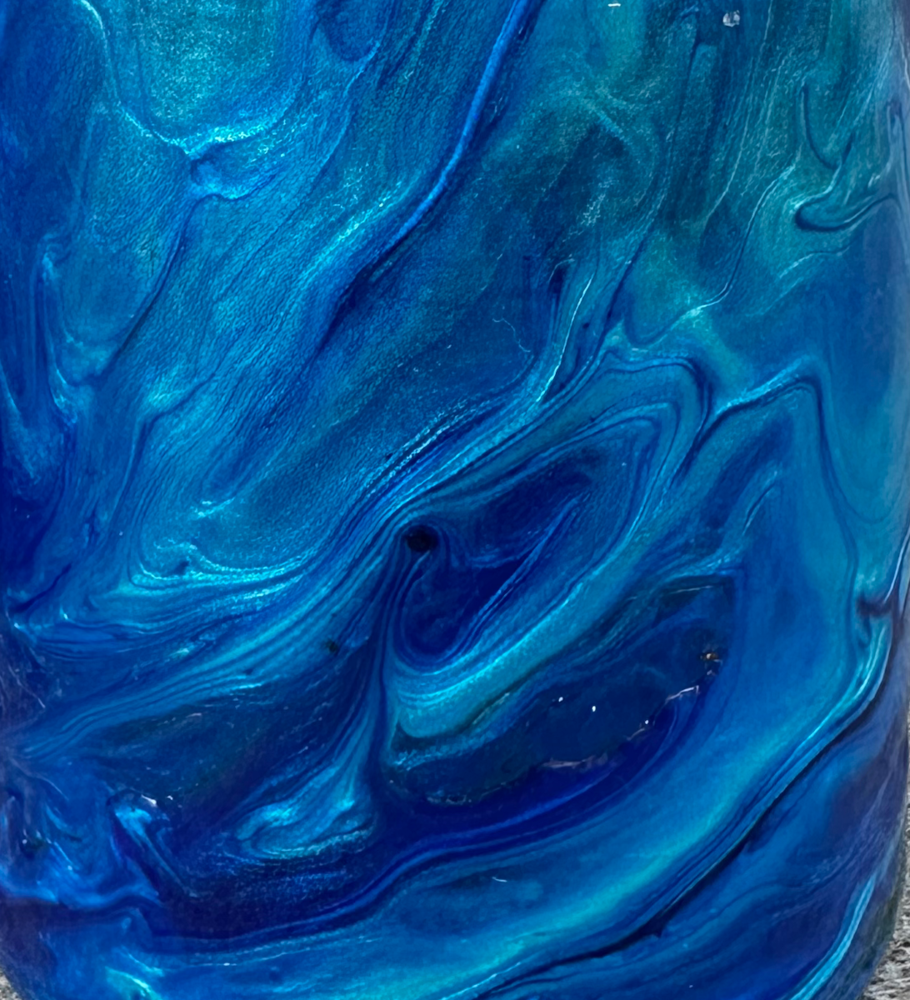
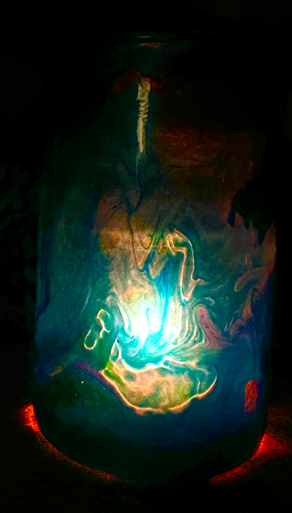

Paint Skins · Glass Vessel
The paint was made for something else. The glass held it. The light changed everything.

The origin
This skin started with a different project entirely. Ultramarine Blue mixed very thin — more water than usual — specifically because of the pigment’s natural transparency. The plan was glass panels. The panels didn’t work out. The leftover paint fell onto the plastic sheeting below during cleanup, pooled where gravity put it, and dried. The result was too good to throw away.
Ultramarine Blue has a partial transparency that most blues don’t. Mixed thin and without silicone, the paint moved in long directional sweeps rather than cells, preserving the flow of the fall rather than organizing into discrete structures.
The vessel
The glass is a cylindrical candle vessel — shorter and wider than a traditional vase, with straight sides that made the skin wrapping more straightforward than a curved form. The skin was applied the same way as the other vases: peeled from the silicone backing, wrapped around the clean glass, mod podge to hold the edge, clear acrylic coat to seal. It held a candle for some time before it became a vase. The clear interior stayed pristine through both uses.

What the light does
Every other skin piece in this body of work is seen by reflected light. This one was occasionally seen by transmitted light, a candle burning inside and pushing light outward through the glass and through the skin. The ultramarine transparency that was intentional in the original paint mix becomes visible in a way it isn’t in reflected light. The marbled surface glows. The color shifts. It’s the same object, but the light source changes what it is.
Technical notes
Tags
More making